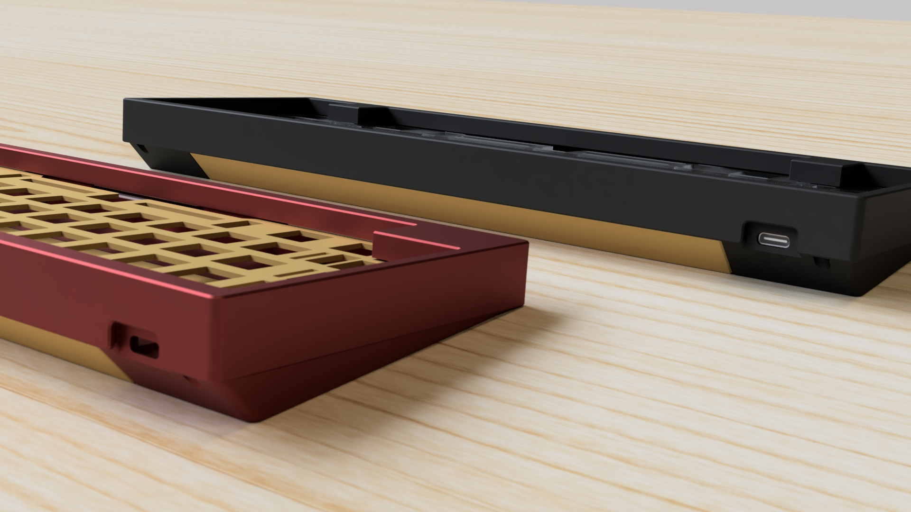
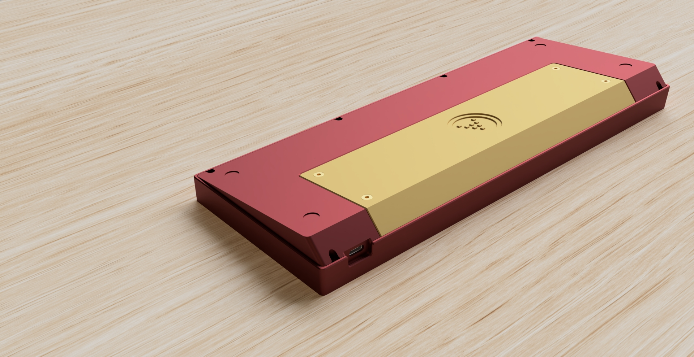
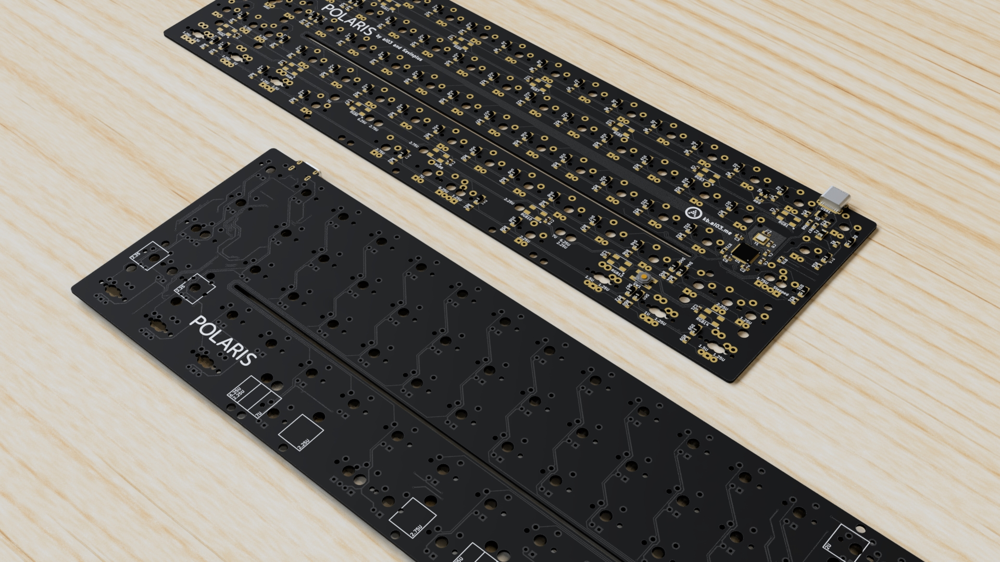
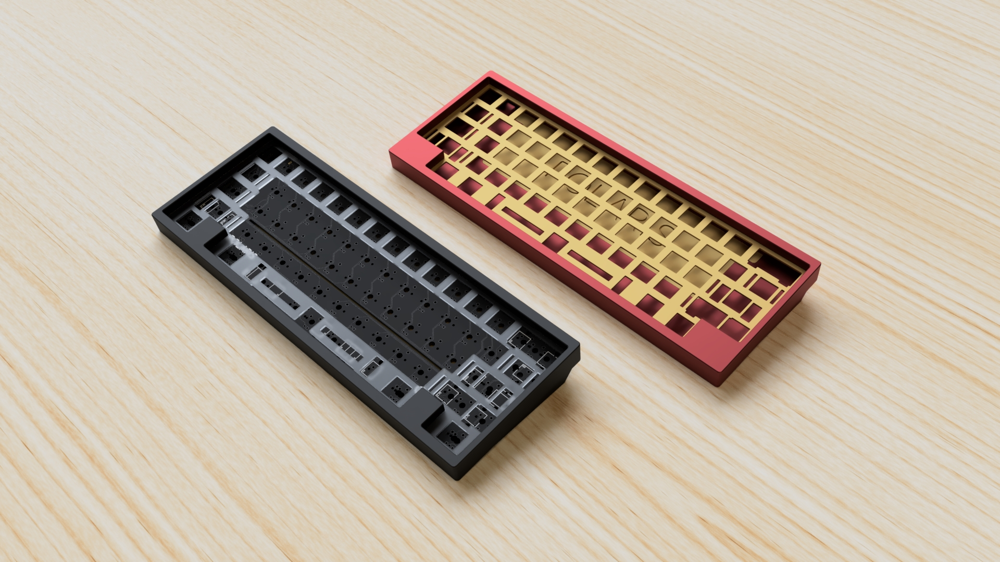
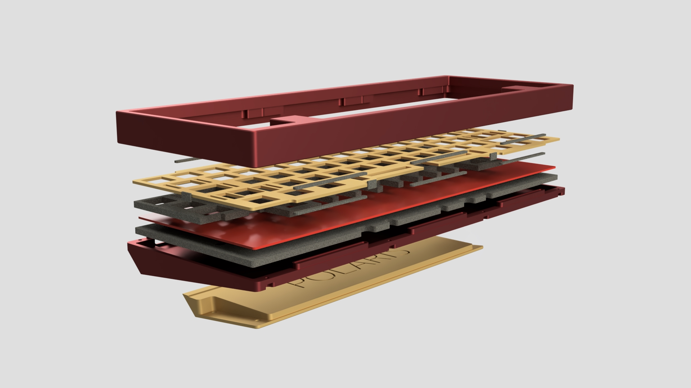
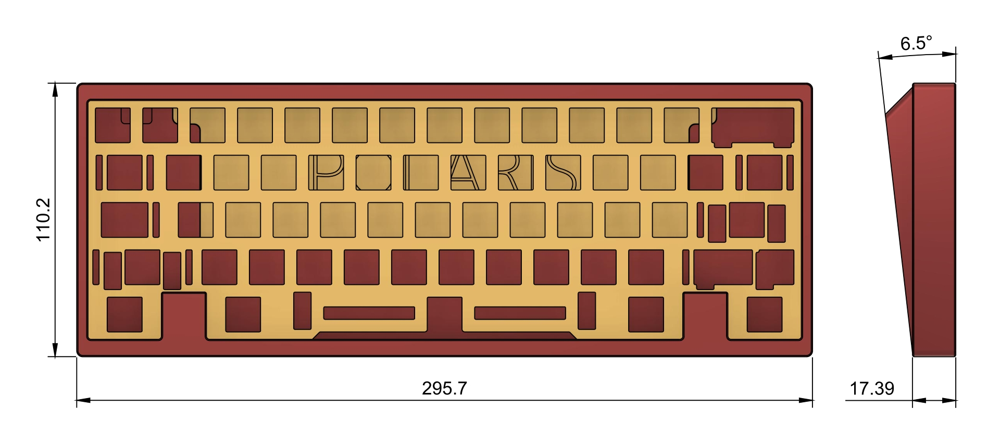
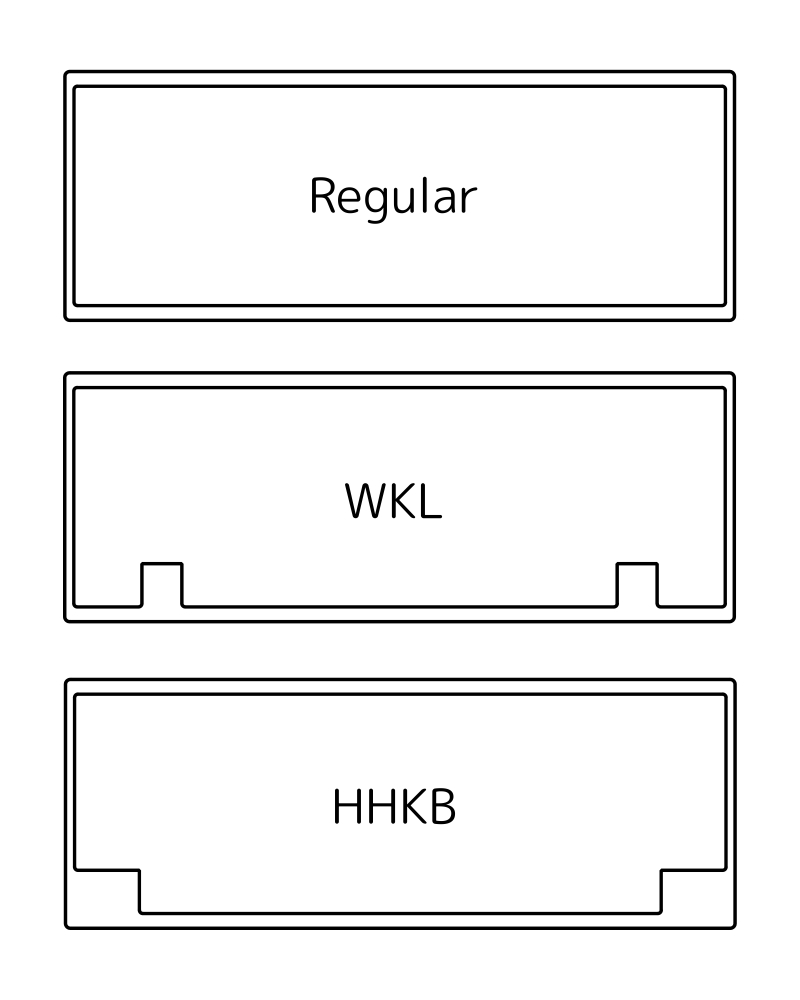
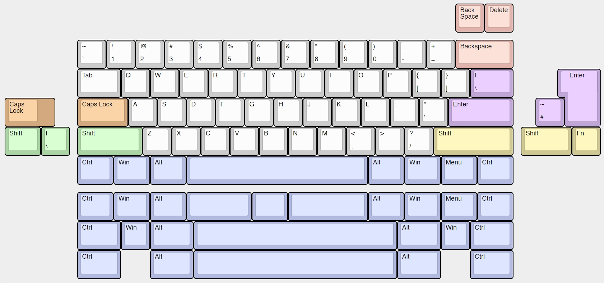
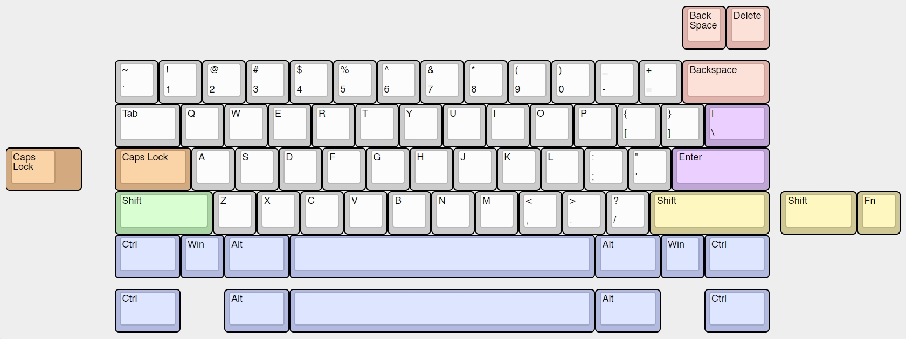

by ai03 and Kevinplus
Offering a quality typing experience without the high price tag, Polaris redefines the expectations from custom keyboards.
With proper gasket plate mounting, flex-slotted 1.2mm thin PCB, sleek seamless aesthetic, and accessible pricing, experience a top-tier 60% keyboard for a mid-range price.
Geekhack Thread KBDfans Product Page Assembly Instructions DIY Resources Cutting no corners, a total of 18 gaskets hold the plate in place for maximum typing comfort, improved acoustics, and easy assembly.
Careful engineering from 8 full redesigns and multiple prototypes are tucked away within the slim bezels.
The seamless chassis borrows the clean look praised in the KBD8X MKII, while adding a rear-angled weight which adds a touch of visible elegance.
Thin bezels are combined with sharp chamfers for a striking modern look.
The 1.2mm thick, slot-cut super flexible PCB offers typing comfort that extends the gasket mount benefits.
Rubber pads applied to the PCB make sure that the stabilizers fit into place without issues.
The plate is offered in brass and polycarbonate, WKL and universal layouts, and half- and full-plate options to meet the exact aesthetic and comfort you desire.
Choose between regular, WKL, and HHKB style tops to suit your needs.
Two foam mid-layers, one below the plate and one below the PCB, fill the case to cancel vibrations and echoing.
The plate is completely isolated by gaskets, leaving no metal-to-metal contact between the plate and chassis once assembled.
Case weight: ~1.3kg
Dimensions: 296 x 110 x 28mm
Price: 265 USD, free shipping included
Case colors:
- E-White
- Black
- Space gray
- Blue grey
- Burgundy red
- Olive green
- Rose gold
- Purple
- Polycarbonate (Extra cost)
Case tops:

Plate options:
- Layouts: WKL, Universal
- Style: Full, Half
- Material: Brass, Polycarbonate
Layouts supported:
- Universal Plate:

- WKL Plate:

Q. Will this fit typical 60% PCBs (GH60, etc)? A. No. The case is matched exactly to the custom-shaped 1.2mm thick PCB. Q. Will you open-source the plate files? A. Yes. They will be available on ai03’s website when they are ready. Q. Exactly how good is gasket mount? A. We won’t make exact claims regarding feel and sound, since they are highly subjective. However, we will say that we picked this specific design and combination of materials for good reason after thorough testing. Q. How does the thin PCB affect stabilizers, which are designed for 1.6mm thick PCBs? A. Thin rubber adhesive shims are placed between the PCB and stabilizers, removing the potential compatibility issues. Q. Is the PCB hot-swap? A. No. Hotswap and large numbers of supported layouts don’t play well together. Q. What USB connector does it use? A. USB Type-C. Q. What plate options should I pick? A. Pick WKL if you’re fine with the layouts supported in the WKL plate; otherwise, use the universal plate. Pick brass for a firm, solid bottom-out and metal heft, or polycarbonate for soft bottom-out and typing comfort that extends the benefits of thin PCB and gasket mount. Pick full-plate for increased weight and solid feel that benefits brass, or half-plate for maximized flex that benefits polycarbonate. Q. All this for $265? How is it possible? A. It was designed to hit a sub-300 price tag from the beginning, and most of the price tag goes straight to the keyboard. On the flipside, it won’t come in fancy packaging, or have extra accessories beyond the keyboard itself. Q. Will there be future rounds? A. Unlikely within the near future. I have too many other designs that I want to produce. Q. Why the name? A. Polaris, as per its name, is a pole star. It is used as a base position for measurements in celestial navigation, due to its characteristic of staying in the same position in the sky regardless of time. Similarly, we hope that this keyboard will illuminate the path towards a brighter future, serving as a baseline for what is possible without breaking the bank.